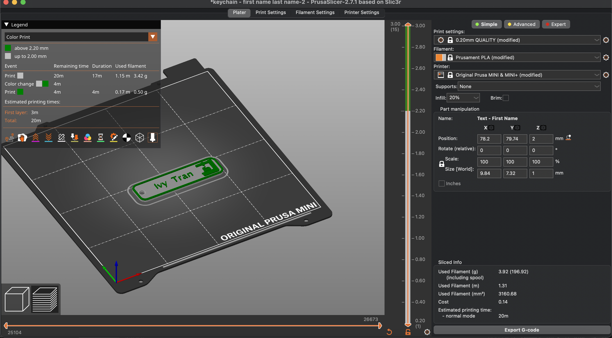
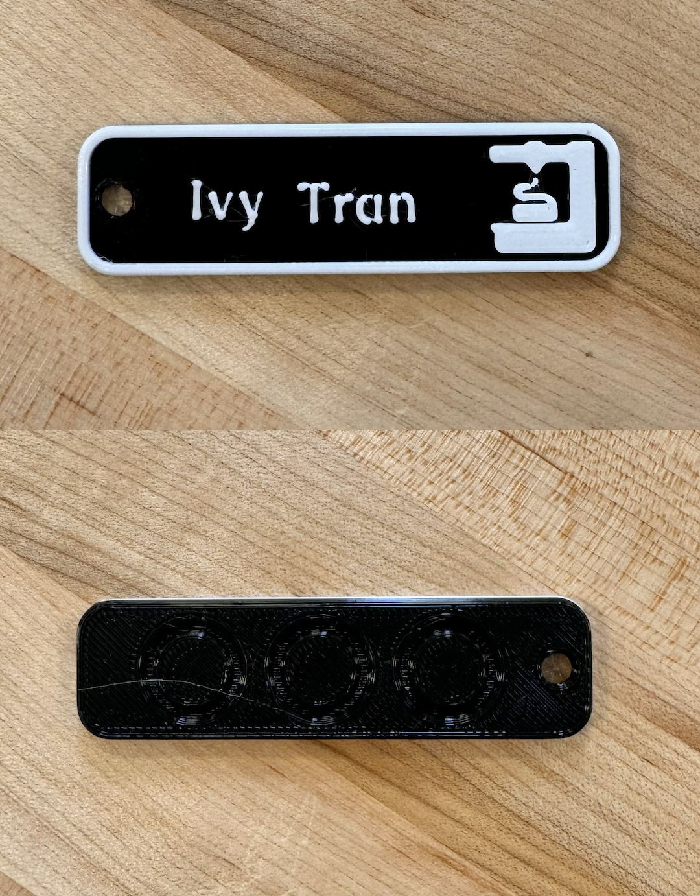
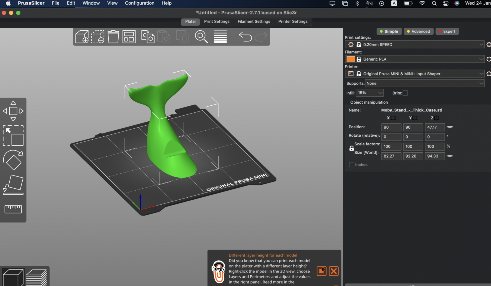
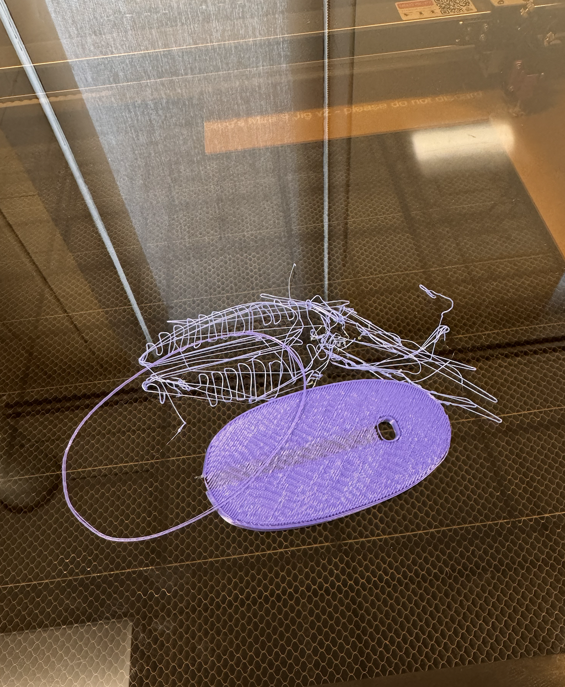

3D Printing Project
Below are the details and insights from my experience with the 3D Printing Project using the Prusa MINI+ machine and Prusa Slicer software.
Project 1: Name Tag
I created my personalized name tag using the Prusa MINI+ 3D printer and Prusa Slicer software. The design was simple with two contrasting colors (Black and White), aimed to clearly feature my name, "Ivy Tran". The Name Tag 3D Print file was a 3MF file. I sliced and export as G-code.
Workflow Steps
I imported the design into Prusa Slicer and adjusted settings for optimal print quality. A layer height of 0.2 mm and an infill of 15% were selected. No support structures were needed for such a project.
Result and Reflection
The Name tag print was a success. The color and text font play a relatively important role in the success of this project. Throughout the printing process, I came across certain problems with loading filaments into the machines. After this first project, I have familiarized myself with loading and unloading filaments with the Prusa MINI+ machine. It is important to make sure that filament is loaded deep enough for the machine to start working.
Project 2: Pushing Boundaries with Calibration Print
The second project was a calibration print designed to test the Prusa MINI+'s limits. I chose an STL file that was a Whale Tail Phone Holder. The anticipated time to print was 3 hours due to the size of the project. This time, I used rainbow filament instead of black and white like the name tag, which meant I did not have to change filaments.
Workflow Steps
I imported the design (https://www.thingiverse.com/thing:1100768) into Prusa Slicer and adjusted settings for optimal print quality. A layer height of 0.2 mm and an infill of 15% were selected. No support structures were needed for this project.
Result and Reflection
The Prusa MINI+ was calibrated, ensuring the bed was level and the nozzle clean. The print started off well, with the first layers being applied precisely. However, midway through, a snag in the filament feed caused an unexpected interruption. The extrusion stopped, resulting in a tangle of filament. This stress test, despite not yielding a usable product, provided valuable insights, especially about the need for monitoring the filament's path and maintaining an unobstructed feed.
File Type: 3MF & STL
Throughout this process, I worked with two primary file types: 3MF and STL. The STL format, while older, contained only the model's geometry. In contrast, the 3MF file provided a more comprehensive data package, including information on color and material, contributing to a richer printing experience.